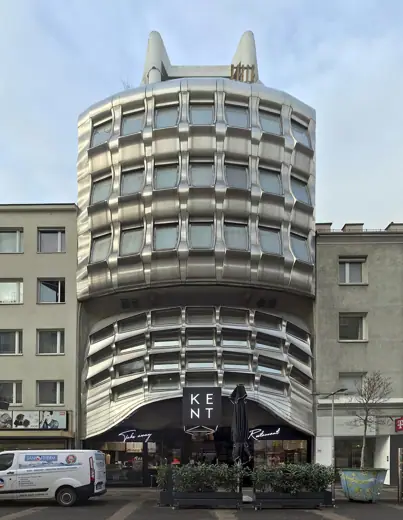
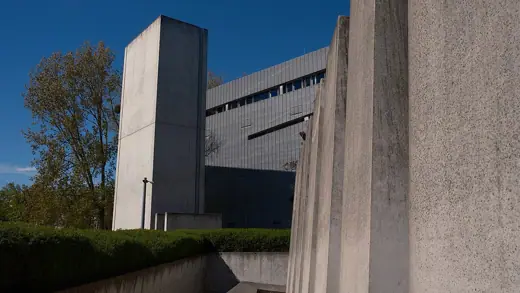
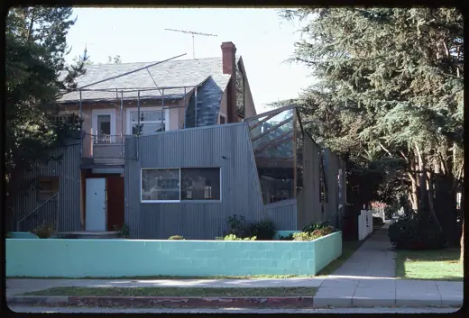
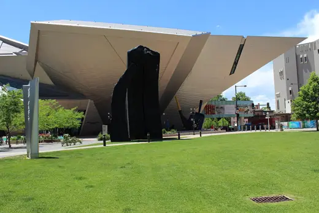
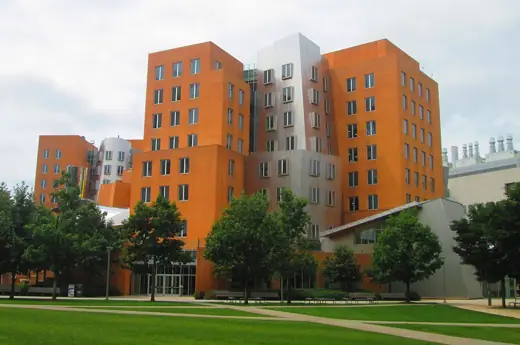
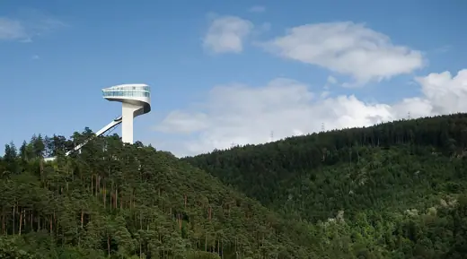
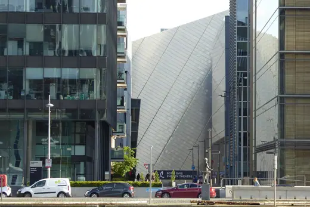
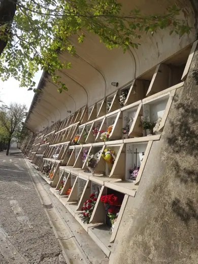
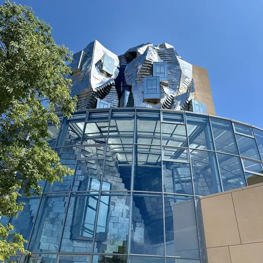
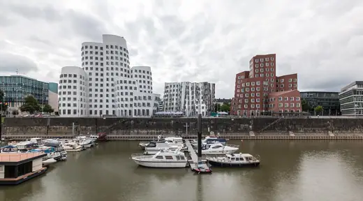

Buildings 75
Sort
 Eli and Edythe Broad Art Museum2012 · East Lansing
Eli and Edythe Broad Art Museum2012 · East Lansing Kunsthal1992 · Rotterdam
Kunsthal1992 · Rotterdam Biomuseo2014 · Panama City
Biomuseo2014 · Panama City European Central Bank2014 · Frankfurt
European Central Bank2014 · Frankfurt Musée des Confluences2014 · Lyon
Musée des Confluences2014 · Lyon Wexner Center for the Arts1989 · Columbus
Wexner Center for the Arts1989 · Columbus Military History Museum2011 · Dresden
Military History Museum2011 · Dresden Felix Nussbaum Haus1998 · Osnabrück
Felix Nussbaum Haus1998 · Osnabrück Busan Cinema Center2011 · Busan
Busan Cinema Center2011 · Busan Dr Chau Chak Wing Building2015 · Sydney
Dr Chau Chak Wing Building2015 · Sydney Ufa-Kristallpalast1998 · Dresden
Ufa-Kristallpalast1998 · Dresden
Zentralsparkasse Branch, Favoritenstrasse1979 · Vienna
Jewish Museum Berlin2001 · Berlin Jay Pritzker Pavilion2004 · Chicago
Jay Pritzker Pavilion2004 · Chicago Walt Disney Concert Hall2003 · Los Angeles
Walt Disney Concert Hall2003 · Los Angeles Contemporary Jewish Museum2008 · San Francisco
Contemporary Jewish Museum2008 · San Francisco
Gehry Residence1978 · Santa Monica Museum of Pop Culture2000 · Seattle
Museum of Pop Culture2000 · Seattle Caltrans District 7 Headquarters2004 · Los Angeles
Caltrans District 7 Headquarters2004 · Los Angeles Rosenthal Center for Contemporary Art2003 · Cincinnati
Rosenthal Center for Contemporary Art2003 · Cincinnati
Frederic C. Hamilton Building, Denver Art Museum2006 · Denver
Ray and Maria Stata Center (MIT Building 32)2004 · Cambridge Danish Jewish Museum2004 · Copenhagen
Danish Jewish Museum2004 · Copenhagen 41 Cooper Square2009 · New York
41 Cooper Square2009 · New York Phaeno Science Center2005 · Wolfsburg
Phaeno Science Center2005 · Wolfsburg BMW Welt2007 · Munich
BMW Welt2007 · Munich Fondation Louis Vuitton2014 · Paris
Fondation Louis Vuitton2014 · Paris DZ Bank Building2001 · Berlin
DZ Bank Building2001 · Berlin Graduate House, University of Toronto2000 · Toronto
Graduate House, University of Toronto2000 · Toronto
Bergisel Ski Jump2002 · Innsbruck 8 Spruce Street2011 · New York
8 Spruce Street2011 · New York parc de la Villette1987 · Paris
parc de la Villette1987 · Paris Weisman Art Museum1993 · Minneapolis
Weisman Art Museum1993 · Minneapolis Imperial War Museum North2002 · Manchester
Imperial War Museum North2002 · Manchester
Bord Gais Energy Theatre2010 · Dublin IAC Building2007 · New York
IAC Building2007 · New York Vitra Design Museum1989 · Weil am Rhein
Vitra Design Museum1989 · Weil am Rhein Dancing House1996 · Prague
Dancing House1996 · Prague
Igualada Cemetery1994 · Igualada
LUMA Arles Tower2021 · Arles Hotel Marqués de Riscal2006 · Elciego
Hotel Marqués de Riscal2006 · Elciego Steinhaus2008 · Steindorf am Ossiacher See
Steinhaus2008 · Steindorf am Ossiacher See
Neuer Zollhof1998 · Düsseldorf Federation Square2002 · Melbourne
Federation Square2002 · Melbourne